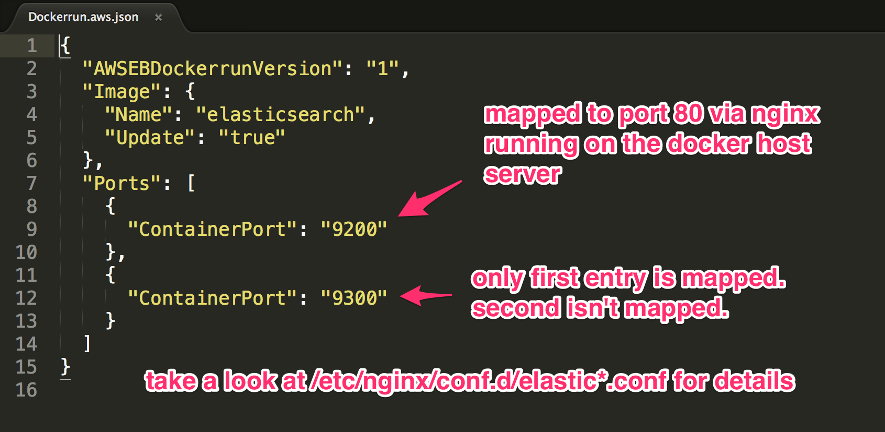

Running Elasticsearch on AWS Elastic Beanstalk
TL;DR code on github @ pfeilbr/Elastic-Beanstalk-Dockerrun.aws.json-Example
This article will show you the steps to run elasticsearch on AWS Elastic Beanstalk. This example uses the elasticsearch docker image as an example. Once running you can visit http://<beanstalk domain>/?pretty an you will see the root elastic search JSON response.
Initial Deployment
-
Modify
Dockerrun.aws.jsonfor your needs.Dockerrun.aws.json reference
-
Commit changes to repo
$ git commit -a -m "changes"``
assumes
Dockerrun.aws.jsonhas already been added to repo. if not,git add . -
Create eb app
$ eb init # populate details``
NOTE: select Docker. Populate all details
-
Create environment for app
$ eb create dev-env``
IMPORTANT Must immediately update the ec2 instance with tags so it doesn’t get terminated. Enable termination protection on the ec2 instance.
Deploying Updates
-
Modify
Dockerrun.aws.jsonfor your needs. -
Commit changes
$ git commit -a -m "my updates"``
-
Deploy to eb
$ eb deploy``
NOTE: Takes between 3-5 min to deploy changes
Notes
Port mapping details specific to aws beanstalk
